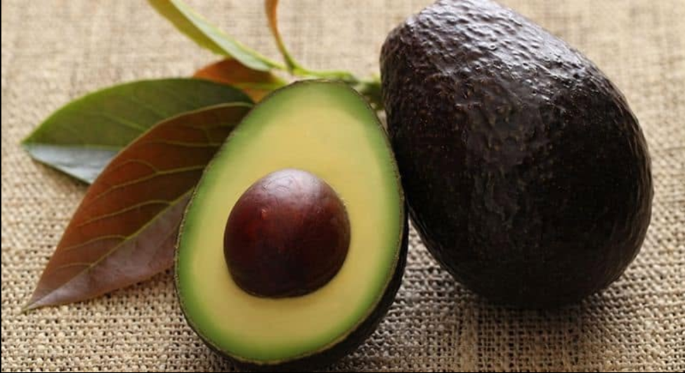

Our Brands
Delivering value through innovation and quality.

Atari Fresh
Supplying fresh agricultural produce sourced directly from smallholder farmers across Uganda.
Learn More
Avoglow
Premium avocado-based oils, wellness products and high-quality natural cosmetics.
Shop Avoglow